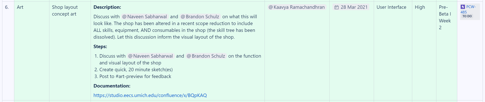

These past two weeks, studio work has begun to cool down. Early into Pre-Beta I, we were able to arrange a playtest session with Apoorva Bansal, one of our industry mentors, who gave us advice on how to salvage the fun parts of the project (and cutting out systems that hogged up a lot of time while adding little value). These vital design conversations have made the overall identity of the project more clear, and while scope reductions were unfortunate, the leads are now confident that we can achieve our revised plan with the time we have left.
Studio-wide & Leads Meetings
Much of this section is standard and very similar to previous discussion. Over the past 2 weeks, I've run 2 leads meetings, each on Saturdays. Both meetings were relatively short, lasting about ~1.5 hours each. I also took approximately 1 hour before each meeting to plan.
As for studio-wide meetings, these presentations were, again, also standard and very similar to what I detailed in the previous dev blogs. For these, I spend an hour or two preparing a presentation as well as a progress video to showcase the game. The progress video for 3/14 (post Pre-Alpha III) is shown below.
I've continued having ~30 minute check-ins with the leads of each pod/department these past two weeks. Each week, these take 4 hours to get through in total. I also met on 3/14 with Nico (and a few other leads) for a little less than 2 hours to discuss the future of WolverineSoft Studio. Nico has kindly offered to meet with me once every other week to discuss the studio, so it looks like I'll continue to have aorund 9-9.5 hours worth of check-ins per 2 weeks.
Playtest Debrief, Scope Reductions, & Creating a Sprint Plan
On Tuesday 3/16, we were able to schedule a meeting with Apoorva Bansal to discuss the scope of our project. Although I was not able to make it to this meeting, I did end up scheduling an "emergency leads debrief" for the next evening. This meeting lasted about 2 hours, and entailed a serious discussion about adjusting the scope of the game. I took notes at this meeting, and they can be viewed here.
I called this a "scope reduction" meeting, but thankfully not much finished work was ultimately cut. Our plan is as follows:
- We will include one hand-crafted tutorial level, and one procedurally generated level in the final game. We had discussed potentially cutting procedural generation out entirely, but given that a significant fraction of our most dedicated members had been working on it since Day One, I felt that it would be too big a blow to morale to justify. Our plan is to give the level generator programmers 1 week to fix critical bugs, while having level designers work on hand-crafting a pre-generated level into a highly polished tutorial. If by then the level generator is still critically buggy, we will simply expand the tutorial level into a single, central level for the game.
- The charger enemy, which has been broken for weeks, will be reserved for the dungeon objective (which itself is not procedural, giving us a better and more predictable environment to fix bugs and unintended behavior).
- The skill tree system was entirely cut. This was the most painful change as a programmer had already invested a great deal of time into the interface, but a necessary one due to last week's cut to player passives.
Our design director (Brandon Schulz) was able to write a very thorough document detailing these changes and how they fit into the overall identity of the game. This document may be viewed here.
Given these changes happened mid Pre-Beta I, new tasks had to be urgently assigned (and old tasks modified) to reflect this updated information. I spent several hours creating a sprint plan as well as Jira tasks for the latter half of Pre-Beta I, which may be viewed here. The macro used in this page directly interfaces with Jira, so filling out the grid automatically created tasks in our backlog.
OBSERVATION: Centralized task creation is a large undertaking, but I think it's highly beneficial. The pipeline is as follows: I spend several hours before a leads meeting creating an exhaustive plan for the week/sprint. I translate this plan into Jira tasks, with a standardized description "template" that includes context, steps, reminders, and links to documentation. After leads meetings, we spend about an "hour" in a workshop letting leads go through and verify these pre-made tasks, making small modifications and asking important clarifying questions. The only other work they do is typically assigning unassigned tasks. The quality of created tasks is much higher, as a centralized party (the producer) is enforcing a standard for the information contained in each issue. Additionally, this allows the producer a much higher-level view of the project and progress, removing communication bottlenecks. Even the more independent pods/departments (such as the Audio team) appreciate the presence of a centralized sprint plan document - I've been told they provide a much more stable perspective off of which to create tasks. Although I am not sure how sustainable this method will be for the next generation of Studio members, I've found it to be a success, at least, for our team. A snippet of what a task looks like in the sprint planning document is attached below. Creating rows in this table automatically creates new tasks with the given specifications in the Jira backlog.
Final Thoughts
Overall, I'm much more confident in the progress of the project at this point than I was while writing the previous dev blog. Although I do still believe we're in a precarious position, we're making good progress in correcting the major overscoping we did at the start of development. I will give a more big picture overview of all my observations in the final dev blog. For now, we have approximately 3 or so weeks of development left - we will move forward with confidence!